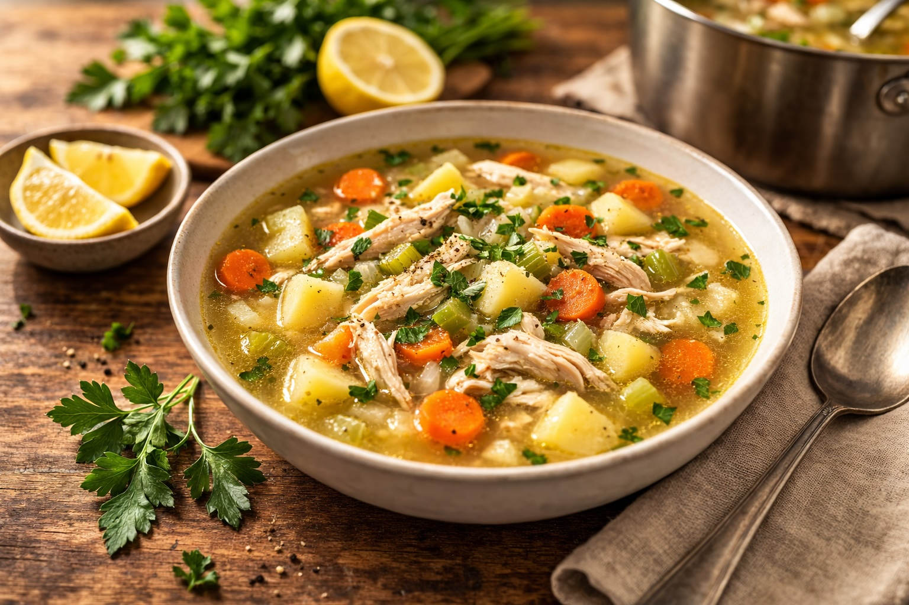

Whole Foods Recipes: Chicken Soup with Potatoes
Last updated: February 26, 2026

A calm, repeatable chicken soup that feels like real food: bone-in thighs for depth, potatoes for stability, and a parsley-lemon finish for clarity.
Key takeaways
- Thighs over whole chicken — less work, forgiving texture, richer broth.
- Potatoes make it a meal — steady energy, easy reheating, kid-neutral.
- Low simmer wins — clearer broth and tender meat.
- Finish fresh — parsley (per bowl) + lemon (in pot) lifts everything.
Purpose
This is a foundational soup you can make in a large pot and eat all week. It’s simple enough to become routine, but satisfying enough to replace “takeout soup” permanently.
Total time
- Prep: 15–20 minutes
- Simmer: 60–90 minutes
- Total: ~90 minutes
Ingredients (large batch)
- 3–3.5 lb bone-in, skin-on chicken thighs
- 1 large yellow onion, diced
- 4–5 celery ribs, chopped
- 4–5 carrots (or baby carrot equivalent), chopped
- 2–3 tsp minced garlic (or 3 cloves)
- 3 medium Yukon gold potatoes, diced (pre-cooked or raw)
- ~12 cups water (no broth needed)
- 1½–2 tsp salt (layered)
- Fresh parsley, chopped
- Juice of ½ lemon
- Optional: bay leaf
Method
- Build the pot. Add chicken, onion, celery, carrots, garlic, salt, and ~12 cups water to a large pot.
- Bring to boil → reduce to simmer. Once boiling, lower heat to a steady gentle simmer (small bubbles, not rolling).
- Simmer 45–60 minutes. Skim foam if desired.
- Add potatoes. If raw, cook 20–25 minutes. If pre-cooked, warm 5–10 minutes only.
- Remove + shred. Remove thighs, discard skin and bones, shred meat, return to pot.
- Finish gently. Turn off heat. Add lemon juice and fresh parsley. Adjust salt.
Notes
- Salt timing: if you plan to reduce the soup, salt later. If you’re eating it as-is, light salting during simmer is fine.
- Clearer broth: keep it at a steady simmer, not a rolling boil.
- Thickness: potatoes and chicken will naturally give the broth more body. Add water if you want it lighter.
- Flavor depth without broth: Using bone-in thighs and full water creates a cleaner, more controllable base than store broth.
Storage
- Refrigerate up to 4–5 days.
- Freezes well in portions.
- Reheat gently. Add a splash of water if needed.
Personal note
This soup is designed to be easy enough to repeat. Once you’ve made it once, it stops being a “project” and becomes a reliable default meal.
Next steps
Continue with more Whole Food Cooking.
This article focuses on general food quality and cooking with quality ingredients, not medical advice.